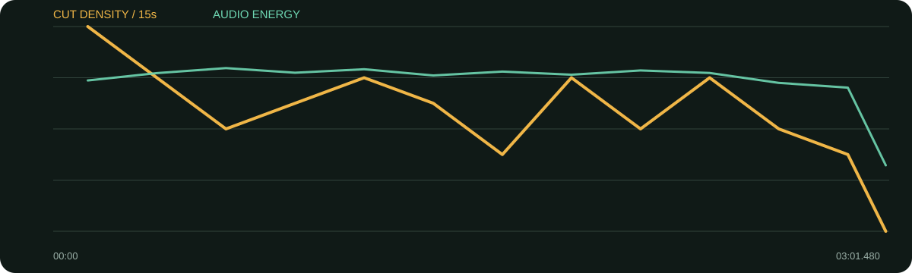

景别 / 机位系统
- 全身/中景/近景构成清晰三档
- 偶尔用手部细节做动作强调
- 同背景、同轴线降低高频切换的突兀感
- 景别变化多跟随观点单位，而不是每两秒机械切
高切镜率并不等于躁：它在同一灰色布景、同一视线轴内，用全身—中景—近景三档稳定切换，问题文字只负责开启新段落。
口径说明：候选镜头由场景检测生成，闪光、人物快速动作、数字推拉和图形变化都可能误触发；逐秒重点由真实原片、字幕语义和全片总览人工选择。字幕来自本地中文语音识别，人名、品牌名与行业词可能有误，不把自动转写当逐字稿。
每张总览按时间顺序覆盖全片。它用于检查章节、B-roll密度和景别回环；详细切点以候选镜头表与下面的逐秒重点为准。
| 时间 | 章节 | 内容推进 | 剪辑任务 |
|---|---|---|---|
| 00:00–00:58 | 品牌印象与自我确认 | 从韩束的坚持谈到31岁更确认自己。 | 场记板开场，问题文字后在三档景别内推进。 |
| 00:58–02:00 | 专注与长期坚持 | 信息干扰下把一件事做好，并谈海外看到品牌的感受。 | 较高切镜密度匹配长答案，但背景保持安静。 |
| 02:00–02:31 | 合作愿景 | 希望长期、深入合作并共创系列。 | 问题文字重新定向，随后回到中近景。 |
| 02:31–03:01 | 能量来源 | 热爱工作与日常面膜习惯。 | 严肃品牌表达后用生活细节轻松收尾。 |
传统B-roll极少，机位变化和手部特写承担主要视觉换气。
综合音轨能量中等，语音段连续。当前未分离音乐与同期声，报告不判断配乐曲目或乐器，只标注问题卡前后的停顿和节奏变化。
每张长图从左到右为真实的连续秒点。重点不是记住截图，而是看清一组画面怎样“进入—完成任务—退出”。
画面事实场记板制造拍摄现场感，随后问题文字给观看任务。
怎么复现场记板不要超过一秒，问题文字要在留白区。
画面事实动作连续让三种尺度在几秒内自然完成。
怎么复现同一回答至少准备一条手势明确的细节镜头。
画面事实内容从自我认知转到长期专注，问题文字承担章节边界。
怎么复现先收完上一句，再让问题停留一遍默读。
画面事实新问题将抽象态度转为具体合作愿景。
怎么复现问题卡要改变内容方向，不要只是复述下一句。
画面事实最后一问更轻，景别与表情也变松。
怎么复现结尾问题可从品牌价值回到人物习惯，增加亲近感。

| 观察项 | 15秒窗口 |
|---|---|
| 视觉最密 | 00:00–00:15（32.0 候选切镜/分）；00:15–00:30（24.0 候选切镜/分）；01:00–01:15（24.0 候选切镜/分） |
| 视觉最缓 | 03:00–03:01（0.0 候选切镜/分）；01:30–01:45（12.0 候选切镜/分）；02:45–03:00（12.0 候选切镜/分） |
| 综合音轨最强 | 00:30–00:45（-19.1 dBFS）；01:00–01:15（-19.4 dBFS）；02:00–02:15（-19.6 dBFS） |
“视觉最密/最缓”基于自动候选切镜；“综合音轨最强”包含人声、环境声、音乐和音效，不能单独当作配乐音量。平均综合音轨为 -20.80 dBFS，最高15秒窗口 -19.14 dBFS，最低15秒窗口 -40.49 dBFS。
| # | 入点 | 出点 | 时长 | 代表帧秒点 | 证据 |
|---|---|---|---|---|---|
| 1 | 00:00.000 | 00:01.280 | 1.28s | 0.576000s | 自动候选 |
| 2 | 00:01.280 | 00:01.920 | 0.64s | 1.568000s | 自动候选 |
| 3 | 00:01.920 | 00:02.880 | 0.96s | 2.352000s | 自动候选 |
| 4 | 00:02.880 | 00:04.760 | 1.88s | 3.630000s | 自动候选 |
| 5 | 00:04.760 | 00:07.640 | 2.88s | 5.510000s | 自动候选 |
| 6 | 00:07.640 | 00:09.800 | 2.16s | 8.390000s | 自动候选 |
| 7 | 00:09.800 | 00:10.920 | 1.12s | 10.304000s | 自动候选 |
| 8 | 00:10.920 | 00:13.760 | 2.84s | 11.670000s | 自动候选 |
| 9 | 00:13.760 | 00:15.760 | 2.00s | 14.510000s | 自动候选 |
| 10 | 00:15.760 | 00:17.640 | 1.88s | 16.510000s | 自动候选 |
| 11 | 00:17.640 | 00:18.720 | 1.08s | 18.126000s | 自动候选 |
| 12 | 00:18.720 | 00:19.840 | 1.12s | 19.224000s | 自动候选 |
| 13 | 00:19.840 | 00:21.720 | 1.88s | 20.590000s | 自动候选 |
| 14 | 00:21.720 | 00:27.640 | 5.92s | 22.470000s | 自动候选 |
| 15 | 00:27.640 | 00:29.920 | 2.28s | 28.390000s | 自动候选 |
| 16 | 00:29.920 | 00:34.000 | 4.08s | 30.670000s | 自动候选 |
| 17 | 00:34.000 | 00:36.120 | 2.12s | 34.750000s | 自动候选 |
| 18 | 00:36.120 | 00:38.240 | 2.12s | 36.870000s | 自动候选 |
| 19 | 00:38.240 | 00:39.720 | 1.48s | 38.906000s | 自动候选 |
| 20 | 00:39.720 | 00:44.760 | 5.04s | 40.470000s | 自动候选 |
| 21 | 00:44.760 | 00:49.480 | 4.72s | 45.510000s | 自动候选 |
| 22 | 00:49.480 | 00:54.240 | 4.76s | 50.230000s | 自动候选 |
| 23 | 00:54.240 | 00:55.360 | 1.12s | 54.744000s | 自动候选 |
| 24 | 00:55.360 | 00:56.400 | 1.04s | 55.828000s | 自动候选 |
| 25 | 00:56.400 | 00:58.320 | 1.92s | 57.150000s | 自动候选 |
| 26 | 00:58.320 | 00:59.400 | 1.08s | 58.806000s | 自动候选 |
| 27 | 00:59.400 | 01:01.960 | 2.56s | 60.150000s | 自动候选 |
| 28 | 01:01.960 | 01:03.680 | 1.72s | 62.710000s | 自动候选 |
| 29 | 01:03.680 | 01:05.480 | 1.80s | 64.430000s | 自动候选 |
| 30 | 01:05.480 | 01:07.320 | 1.84s | 66.230000s | 自动候选 |
| 31 | 01:07.320 | 01:09.000 | 1.68s | 68.070000s | 自动候选 |
| 32 | 01:09.000 | 01:11.160 | 2.16s | 69.750000s | 自动候选 |
| 33 | 01:11.160 | 01:12.200 | 1.04s | 71.628000s | 自动候选 |
| 34 | 01:12.200 | 01:16.240 | 4.04s | 72.950000s | 自动候选 |
| 35 | 01:16.240 | 01:17.560 | 1.32s | 76.834000s | 自动候选 |
| 36 | 01:17.560 | 01:19.560 | 2.00s | 78.310000s | 自动候选 |
| 37 | 01:19.560 | 01:20.600 | 1.04s | 80.028000s | 自动候选 |
| 38 | 01:20.600 | 01:24.360 | 3.76s | 81.350000s | 自动候选 |
| 39 | 01:24.360 | 01:28.720 | 4.36s | 85.110000s | 自动候选 |
| 40 | 01:28.720 | 01:31.680 | 2.96s | 89.470000s | 自动候选 |
| 41 | 01:31.680 | 01:33.600 | 1.92s | 92.430000s | 自动候选 |
| 42 | 01:33.600 | 01:38.120 | 4.52s | 94.350000s | 自动候选 |
| 43 | 01:38.120 | 01:41.720 | 3.60s | 98.870000s | 自动候选 |
| 44 | 01:41.720 | 01:45.440 | 3.72s | 102.470000s | 自动候选 |
| 45 | 01:45.440 | 01:49.120 | 3.68s | 106.190000s | 自动候选 |
| 46 | 01:49.120 | 01:51.320 | 2.20s | 109.870000s | 自动候选 |
| 47 | 01:51.320 | 01:53.000 | 1.68s | 112.070000s | 自动候选 |
| 48 | 01:53.000 | 01:54.320 | 1.32s | 113.594000s | 自动候选 |
| 49 | 01:54.320 | 01:56.840 | 2.52s | 115.070000s | 自动候选 |
| 50 | 01:56.840 | 01:59.040 | 2.20s | 117.590000s | 自动候选 |
| 51 | 01:59.040 | 02:01.080 | 2.04s | 119.790000s | 自动候选 |
| 52 | 02:01.080 | 02:05.600 | 4.52s | 121.830000s | 自动候选 |
| 53 | 02:05.600 | 02:07.600 | 2.00s | 126.350000s | 自动候选 |
| 54 | 02:07.600 | 02:08.880 | 1.28s | 128.176000s | 自动候选 |
| 55 | 02:08.880 | 02:11.760 | 2.88s | 129.630000s | 自动候选 |
| 56 | 02:11.760 | 02:15.600 | 3.84s | 132.510000s | 自动候选 |
| 57 | 02:15.600 | 02:17.280 | 1.68s | 136.350000s | 自动候选 |
| 58 | 02:17.280 | 02:20.840 | 3.56s | 138.030000s | 自动候选 |
| 59 | 02:20.840 | 02:23.120 | 2.28s | 141.590000s | 自动候选 |
| 60 | 02:23.120 | 02:24.240 | 1.12s | 143.624000s | 自动候选 |
| 61 | 02:24.240 | 02:26.200 | 1.96s | 144.990000s | 自动候选 |
| 62 | 02:26.200 | 02:28.000 | 1.80s | 146.950000s | 自动候选 |
| 63 | 02:28.000 | 02:33.640 | 5.64s | 148.750000s | 自动候选 |
| 64 | 02:33.640 | 02:36.360 | 2.72s | 154.390000s | 自动候选 |
| 65 | 02:36.360 | 02:38.360 | 2.00s | 157.110000s | 自动候选 |
| 66 | 02:38.360 | 02:40.640 | 2.28s | 159.110000s | 自动候选 |
| 67 | 02:40.640 | 02:44.240 | 3.60s | 161.390000s | 自动候选 |
| 68 | 02:44.240 | 02:49.440 | 5.20s | 164.990000s | 自动候选 |
| 69 | 02:49.440 | 02:52.040 | 2.60s | 170.190000s | 自动候选 |
| 70 | 02:52.040 | 02:55.120 | 3.08s | 172.790000s | 自动候选 |
| 71 | 02:55.120 | 02:59.760 | 4.64s | 175.870000s | 自动候选 |
| 72 | 02:59.760 | 03:01.480 | 1.72s | 180.510000s | 自动候选 |